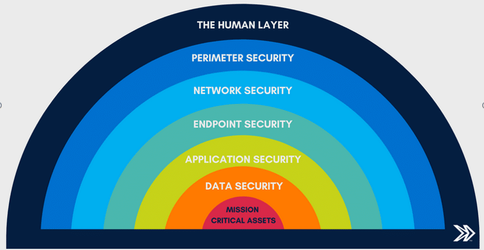

Despite how common cyber crime has become, many people still hold on to false beliefs about it. These beliefs can give people a false sense of security, cause them to underestimate the risks, or stop them from taking the right steps to protect themselves. Misconceptions about cyber crime are dangerous because they can lead to poor decisions and risky behavior online. In this article, we will look at some of the most common myths about cyber crime and explain the truth behind each one, so that you can be better informed and better protected.
Myth 1: "I Am Not Important Enough to Be a Target"
One of the most dangerous and common myths is the belief that cyber criminals only go after famous people, wealthy individuals, or large companies. Many ordinary people think to themselves, "Why would anyone bother hacking me? I have nothing worth stealing." The truth is that cyber criminals are not always selective. They often use automated tools that attack thousands of targets at once, looking for the easiest ones to exploit. Your email account, social media profiles, and online banking details all have value to a criminal, whether they use them directly or sell them to others. In fact, everyday people are often easier targets than large organizations, simply because they have fewer security measures in place. Believing that you are too small or unimportant to be targeted is exactly the kind of thinking that makes you vulnerable. Every person with an internet connection is a potential target, and taking basic security steps is important for everyone.
Myth 2: "Antivirus Software Alone Will Keep Me Safe"
Many people believe that as long as they have antivirus software installed on their devices, they are fully protected from cyber threats. While antivirus software is an important layer of defense, it is far from a complete solution on its own. Cyber criminals constantly develop new methods and tools that can bypass antivirus detection, especially with the rise of new attack techniques and social engineering. No software can protect you if you choose to give away your password to a phishing website that looks exactly like your bank's login page. Cybersecurity requires a layered approach that includes strong passwords, two-factor authentication, regular software updates, careful online behavior, and healthy skepticism toward messages you did not expect. Relying only on antivirus software creates a false sense of security that can be just as dangerous as having no protection at all.

Myth 3: "Cyber Crime Only Happens to People Who Do Not Know Technology"
There is a common assumption that only people who do not understand technology fall for cyber scams or get hacked, and that being tech-savvy automatically makes you safe. This is simply not true. Some of the most advanced cyber attacks have successfully targeted IT professionals, cybersecurity experts, and even government agencies with dedicated security teams. Social engineering attacks, for example, exploit human psychology rather than technical weaknesses. Even highly intelligent and tech-literate individuals can be manipulated when they are tired, distracted, or under pressure. The reality is that cyber criminals are creative and always developing new tricks designed to fool even the most careful users. Being knowledgeable about technology helps, but it does not make anyone completely immune to cyber crime. Staying humble, continuously learning, and keeping a healthy level of skepticism are more valuable than technical skill alone when it comes to staying safe online.
Myth 4: "A Strong Password Is Enough to Protect My Accounts"
Many people believe that having a strong, complex password is all they need to keep their accounts secure. While strong passwords are absolutely important, they are not enough on their own. Passwords can be compromised in many ways that have nothing to do with how strong they are. They can be stolen through phishing attacks, exposed in data breaches at websites you use, guessed through social engineering, or taken by harmful software on your device. This is why using two-factor authentication (2FA) is so important. Even if a criminal gets your password, they still cannot access your account without the second verification step. Using the same password across multiple platforms is also extremely risky, because a breach on one site can compromise all your accounts. A strong password is a good start, but a complete approach to account security requires combining it with 2FA, unique passwords for each account, and regular password updates.
Myth 5: "Cyber Crime Is Not a Real Crime Because It Only Happens Online"
Some people downplay cyber crime by thinking of it as something that only exists in the digital world and therefore does not have real-world consequences. This dangerous belief prevents many victims from reporting crimes and causes some potential criminals to underestimate the legal risks they face. Cyber crime is very much a real crime with real legal consequences. In the Philippines, the Cybercrime Prevention Act of 2012 provides for imprisonment and heavy fines for a wide range of online offenses. The harm caused by cyber crime, including financial losses, emotional trauma, damaged reputations, and compromised personal safety, is just as real and serious as harm caused by traditional crimes. Many cyber crimes, such as online sexual exploitation, stalking, and fraud, have direct physical-world consequences for victims. Law enforcement agencies including the NBI Cybercrime Division and the PNP Anti-Cybercrime Group actively investigate and prosecute cyber crimes in the Philippines. Anyone who believes that what happens online has no real consequences is very dangerously mistaken.
Conclusion
Myths and wrong beliefs about cyber crime are not harmless misunderstandings. They are genuinely dangerous because they can lead people to take insufficient steps to protect themselves and leave them exposed to real harm. The truth is that anyone can be a target, technology alone cannot protect you, smart people can be fooled, strong passwords are just the beginning, and cyber crime carries serious real-world consequences. Replacing these myths with accurate knowledge is one of the most powerful things you can do to protect yourself and the people around you online. Cybersecurity awareness starts with honest and informed thinking about the nature of the threat. By understanding the reality of cyber crime rather than holding on to comfortable myths, we can all make smarter decisions and build safer digital habits that stand up against the real threats we face every day online.